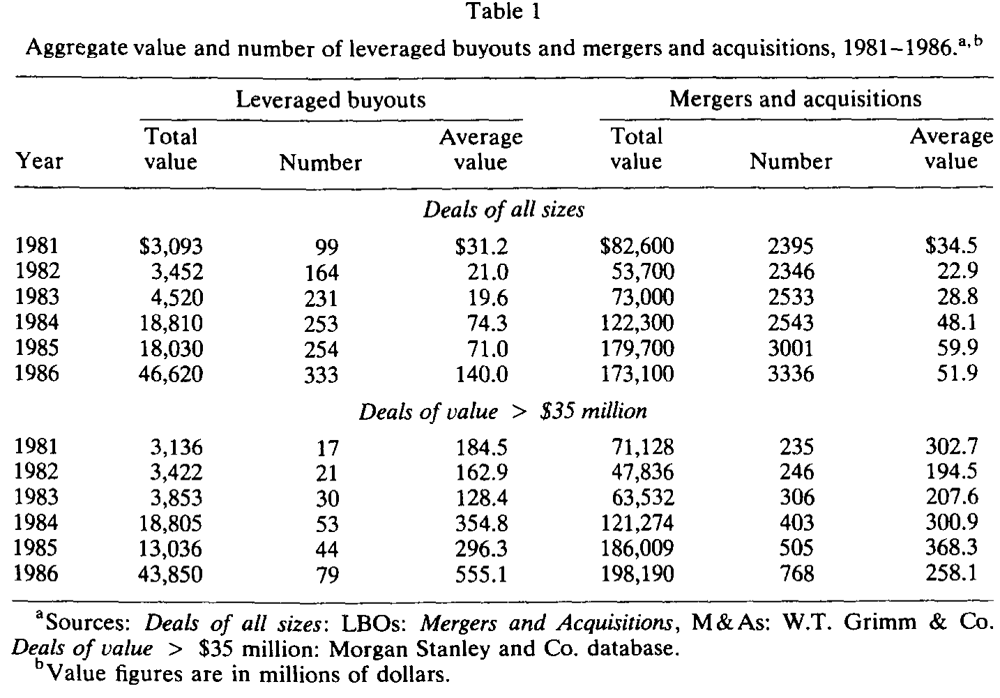
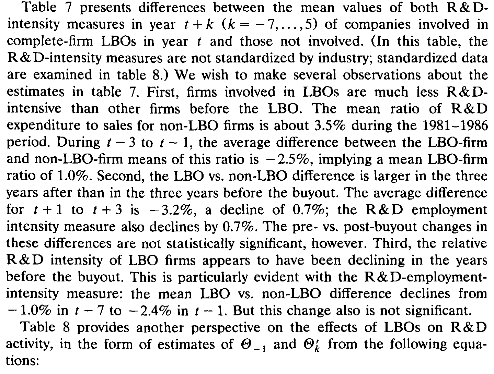
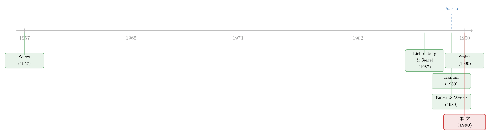

杠杆买断之后，工厂里到底发生了什么？
本文读的是 Lichtenberg & Siegel (1990, Journal of Financial Economics)：他们用美国普查局逾 1.2 万家制造业工厂的纵向数据发现，1983–1986 年发生的杠杆买断（尤其是管理层买断）显著抬高了工厂的全要素生产率——从买断前三年高出行业均值 2.0%，跃升到买断后三年的 8.3%；而代价主要落在白领员工的就业与薪酬上，蓝领工人几乎毫发无伤。
1 引言：一个绕不开的争论
1980 年代，杠杆买断 (leveraged buyout, LBO) 横空出世。它在并购市场里的份额，从 1981 年的 4% 一路飙到 1986 年的 27%；在那五年里 M&A 资产价值的增量中，LBO 几乎贡献了一半。一边是华尔街赚得盆满钵满，一边是公众舆论里满天飞的「蝗虫」「秃鹫」「债务赌徒」。于是一个问题摆在所有人面前：当一家公司被高杠杆买下、管理层被绑上巨额债务、总部那几百号人被裁到只剩十几个人之后——这家公司到底是变好了，还是只是被掏空了？
支持者的逻辑很优雅。买断会同时拧动好几个旋钮：杠杆陡增，逼着经理人必须挤出现金去还本付息，否则就把公司拱手让给债权人；管理层的持股大幅上升——Jensen 和 Murphy (1990) 算过，LBO 组织里 CEO 持股中位数高达 6.4%，而 Forbes 1000 公司里这个数字只有 0.2%；近一半的 LBO 买的是「分部」而非整个公司，于是买断后的企业往往更扁平、更聚焦。这些变化都指向同一个方向：把经理人的利益和股东焊在一起，公司的经营业绩理应改善。
这套故事听上去无懈可击。可问题是——怎么证明？
2 真正关键的一步：换一把尺子，也换一个层级
在这篇论文之前，研究者衡量「买断后业绩」用的是两类尺子。一类是事前 (ex ante) 的：交易宣布时股东拿到的溢价（参见 Amihud 1989 的综述）。另一类是事后 (ex post) 的：经营利润、净现金流——Kaplan (1989)、Smith (1990)、Baker and Wruck (1989) 走的都是这条路。
但作者认为，利润和现金流都不是「最根本」的那个量。Baily and Schultze (1990)、Allen, Faulhaber, and MacKinlay (1989) 的理论模型说得很清楚：生产率与盈利能力、股价都正相关，但生产率更底层——是它决定了另外两个。于是作者把尺子换成了 全要素生产率 (total factor productivity, TFP)，也就是单位总投入所产出的真实产量。
光换尺子还不够。真正关键的一步，在于换一个观测层级。以往的研究只能用公司层面的公开财报，这就带来两个绕不过去的麻烦：
- LBO 之后公司变成私有的，按规矩根本不必向 SEC 披露财务数据。能看到的那些「上市后又发了公开债/优先股」的公司，是一个非随机样本。
- 近一半的大型 LBO 买的是分部而不是整家公司，而分部级的数据公开渠道根本拿不到——这正是 Kaplan (1989) 和 Smith (1990) 不得不只盯着「整公司买断」的原因。
作者绕开这两座大山的办法，是钻进美国普查局的 纵向研究数据库 (Longitudinal Research Database, LRD)。这是一座工厂级 (plant-level) 的微观数据库，把五年一度的《制造业普查》和《制造业年度调查》拼接而成，记录了 1972–1986 年间两万多家制造业工厂的产出、资本、劳动、材料、关停、工资等变量。它最大的好处是：不管你是上市还是私有，工厂照样要填普查表。这一下就把前述的样本选择问题连根拔掉了。
这正是这篇论文最容易被低估、却最值钱的贡献：不是又算了一遍 LBO 收益，而是第一次把「买断的生产率效应」放到了工厂层级、并且用不受披露规则筛选的全样本来度量。后来研究 LBO「私有化能撑多久」的人（可参见《LBO 到底是「速战速决」还是「从此私有」？》），也大多是顺着这条「用更底层数据看 LBO」的路走下来的。
3 模型与度量：把「效率」从一条回归残差里解出来
接下来要解决一个更技术性的问题：工厂的 TFP 看不见，怎么把它「量」出来？作者的做法是把生产函数写成可估计的回归，再让残差替自己说话。我们一步步看。
生产率最一般的定义，是实际产出比实际投入：
$$ E = Q/\text{input} $$
由于企业用的不止一种投入，更合适的是用总投入的加权指数做分母，得到全要素生产率：
$$ \varepsilon_T = Q/T(L, K) $$
把它移项，就长得像一个生产函数——产出由投入的数量和生产者的效率共同决定：
$$ Q = \varepsilon_T \cdot T(L, K) $$
作者假设总投入 \(T(\cdot)\) 是 Cobb–Douglas 形式（几何加权和）：
$$ T(L, K) = L^{\alpha} K^{\beta} $$
于是生产函数变成：
$$ Q = \varepsilon_T \cdot L^{\alpha} K^{\beta} $$
两边取对数，再假设技术参数 \(\alpha,\beta\) 跨工厂不变、而 TFP 跨工厂变化却不可观测，就得到一个可以跑回归的方程：
$$ \ln Q_i = \alpha \ln L_i + \beta \ln K_i + u_i $$
这里的妙处在于：扰动项 \(u_i = \ln \varepsilon_{Ti}\) 恰恰就是（对数化的）工厂生产率。只要这个扰动与投入 \(L,K\) 不相关，OLS 残差就是各工厂相对其行业均值的生产率偏离的最佳线性无偏估计：
$$ e_i = \ln Q_i - a \ln L_i - b \ln K_i $$
这里有一场老争论。Marschak and Andrews (1944) 担心扰动与投入不正交：如果生产者在选投入量之前就知道自己的生产率，那他选的（利润最大化）投入量必然依赖于这个扰动，OLS 就不一致了。但 Zellner, Kmenta, and Dreze (1966) 反驳说，更合理的假设是：扰动的实现值要到投入选定之后才揭晓，企业最大化的是期望利润——这样投入就不依赖 \(u\)，OLS 仍然无偏。作者站在后者一边，并补充：Lichtenberg (1988) 发现 OLS 估出的投入弹性与要素份额非常接近，两种做法殊途同归。
最后，因为制造业里中间材料占了总成本一半以上，作者把材料 \(M\) 也塞进生产函数，得到真正拿去估计的那个核心方程：
作者按四位数 SIC 行业、按年份分组跑这个 OLS，每条残差就是该工厂在那个行业那一年里相对均值的生产率偏离。然后比较同一批工厂买断前后这条残差的变化，就得到了买断的生产率效应。
作者自己很坦诚地提醒：LRD 只有产出和材料的名义值，没有价格。若市场不完全竞争，残差里就混进了价格变化。比如 Baker and Wruck (1989) 在 O.M. Scott 的案例里发现，公司被买断后能从供应商处拿到更优惠的条款——这等于材料价格下降。果真如此，买断前后残差的上升就会高估了纯效率的提升。这是悬在所有结论头上的一把剑。
4 数据与样本：从两万家工厂里认出谁被买断了
样本的骨架是 LRD 中那批在 1972–1981 年每一年都被观测到的工厂，共 20,493 家。本文把它们延伸到 1986 年；由于期间有些工厂关停或退出调查，到 1986 年只剩约 14,300 家。
难点在于：LRD 只记录「所有权是否变更」，并不标注哪笔是 LBO。作者于是从摩根士丹利拿到一份 1979–1988 年的 LBO 名单，再把名单上的母公司名字与 LRD 工厂的母公司代码逐一比对。整笔公司被买断的，编码 LBO = 1；只买了一部分的，再用业务描述去比对该工厂的 SIC 行业，落在范围内的才记为 1。摩根士丹利只收录交易价值 ≥ $3,500 万 的「大型 LBO」——这部分按笔数只占 19%，按价值却占了 96%。最终他们在 LRD 里匹配上了按价值计 57% 的大型 LBO，覆盖度相当不错。
下表给出 1981–1986 年 LBO 与整体并购的规模对照，能直观看到 LBO 在这五年里如何「井喷」——平均单笔价值从 1981 年的 $31.2M 涨到 1986 年的 $140.0M。

Table 1
作者还能进一步把 管理层买断 (management buyout, MBO) 从 LBO 中切出来——即收购方包含被收购单位现任管理层的那一类。在他们的 LRD 抽样里，MBO 占了大型 LBO 总价值的 27%。这一区分很重要，因为下文的反转，正出在 MBO 身上。
5 主要结果：先抑后扬的那条生产率曲线
结论可以浓缩成一句话：买断确实提高了生产率，但「哪一年的买断」决定了答案。
对于 1983–1986 年发生的 LBO（尤其是 MBO），工厂的相对生产率呈现一条漂亮的先抑后扬曲线：买断前三年平均高出行业均值 2.0%，到买断后三年跃升到 8.3%。换句话说，相对生产率在买断前后提高了约 6 个百分点——而且这个提升对 MBO 尤为强劲。
但 1981 和 1982 年的买断，生产率效应在统计上不显著。作者对此格外谨慎：早期 LBO 数量少、规模小，因此 \(t+3\) 年之后的估计精度本就低得多；更要紧的是，既然早期买断的效应与后期不同，那么仅靠早期交易估出的 \(t+4\)、\(t+5\) 年长期效应，未必能代表后期买断的真实长期影响。
那么，效率是从哪里挤出来的？答案落在劳动力的结构性调整上。买断之后，白领（非生产性）员工的就业和薪酬双双下降，而蓝领（生产性）工人的就业与薪酬基本不变。这个图景与引言里那个「总部几百上千人被一个十几人的 LBO 协会取代」的传说完全吻合——被砍掉的是管理层级和管理费用，而不是车间里干活的人。
论文还顺带回答了一个常被攻击 LBO 的问题：买断会不会扼杀研发？作者比较了买断工厂在交易前后 R&D 投入的变化（如表 7 所示），并未发现买断系统性地削减研发投入的证据——这对「LBO 牺牲长期换短期」的指控，是一个温和的反驳。

Table 7: presents differences between the mean values of both R&D-
6 文献脉络
把视线拉远，这篇论文站在两条河流的交汇处。
一条是生产率测度的河。源头是 Solow (1957)：他用总量生产函数把产出增长拆成投入增长与「残差」，那个残差——全要素生产率——从此成了衡量技术进步与效率的标准语言。本文做的，正是把 Solow 的思路下沉到工厂层级，用分行业、分年份的回归残差去度量每一家工厂的相对效率。
另一条是 LBO 与公司治理的河。1980 年代的核心人物是 Michael Jensen——他关于自由现金流与「主动投资者」的论述（Jensen 1989；可参见《现金为什么一定要「还」出去？——四十年后，重读 Jensen 的自由现金流》）为「债务能纪律经理人」提供了理论弹药；Jensen and Murphy (1990) 则量化了 LBO 组织里管理层持股的惊人之高。沿着这套理论做实证的，先有作者自己的 Lichtenberg and Siegel (1987)（用所有权变更看生产率），后有 Kaplan (1989)、Smith (1990) 用经营利润和现金流证明 MBO 改善了业绩，以及 Baker and Wruck (1989) 对 O.M. Scott 的临床式个案。
本文恰好坐在这两条河的汇流处：用 Solow 的生产率语言、Census 的工厂数据，去检验 Jensen 一脉关于 LBO 的核心假说。它和 Kaplan、Smith 互为印证——后两者说「利润上去了」，本文说「比利润更底层的效率也上去了」。

7 评论与延伸（Q&A + 研究方向）
(a) 几个可能的疑问
Q：相对生产率上升了 6 个百分点，能说是买断「导致」的吗？
不能直接这么说，作者本人也明确承认这一点。这里的根本困境是反向因果：也许是经理人事先就掌握了「生产率即将上升」的私人信息，才去发起买断的——果真如此，那买断只是「搭了顺风车」，而非原因。作者无法在自己的框架内排除这种解释，只能援引 Kaplan (1989)、Smith (1990) 提供的旁证来削弱它。所以严格说，这是一篇关于「买断伴随着什么变化」的论文，而非「买断引起了什么」的论文。
Q：为什么 1981–82 年的买断没效应，1983–86 年的却有？这会不会本身就说明问题？
它确实可能是一把双刃剑。乐观地读：早期 LBO 又少又小，估计精度天然偏低，不显著未必是没效应。悲观地读：如果买断的效应真的随时代不同，那任何「长期效应」的外推都站不住脚——而本文的 \(t+4\)、\(t+5\) 年估计恰恰只来自早期交易。作者很诚实地把这层不确定性摊在了桌面上。
Q：用名义产出代替实际产出，结论会不会是「价差」而非「效率」造成的？
这是最该警惕的威胁。LRD 没有价格数据，残差里混着价格变动。若买断后企业更愿意行使市场势力抬价，或像 O.M. Scott 那样从供应商处压低了材料价格，那么残差的上升就会高估纯效率的提升。作者只能论证年度库存变动相对出货值很小（<1%），但对价格本身无能为力。这是数据层面无法弥补的硬伤。
Q：白领被裁、蓝领没事——这到底是「提效」还是「转移」？
取决于你站在谁的立场。从企业效率看，砍掉冗余的管理层级是实打实的成本节约；但如果被裁的白领其实在为别的工厂提供服务（如总部、研发实验室这类「辅助机构」），那么 LRD 只看制造业工厂、看不到辅助机构，就会把「把工作转移出去」误读成「凭空提效」。作者引用 Lichtenberg and Siegel (1990) 的证据指出，所有权变更倾向于降低辅助投入与生产投入之比——若如此，本文反而低估了买断对工厂生产率的真实效应。
Q：那研发呢？高杠杆不是常被指责「杀死长期投资」吗？
本文没有找到买断系统性削减研发的证据。但要小心：样本里能持续报告 R&D 的工厂本身可能是一个特殊群体，而且制造业工厂层面的 R&D 度量相当粗糙。这个「无显著削减」的结论，证据力比生产率那条主结果要弱。
Q：这篇和 Kaplan (1989)、Smith (1990) 到底什么关系，是重复还是补充？
是互补。Kaplan 和 Smith 用公司层面的经营利润/现金流，只能看整公司买断、且受披露规则筛选；本文用工厂层面的全要素生产率，能看分部买断、且覆盖私有公司。前者回答「钱赚得多不多」，本文回答「东西造得有没有更有效率」。两者结论方向一致，互相加固。
(b) 几个可能的研究问题与提案
1. 把「价格」补回去：用产品级价格数据重估 LBO 的纯效率效应。 - 【经济故事】本文最大的软肋是无法区分「效率提升」与「抬价/压低进价」。如果能用产品级出厂价格把名义产出折成实际产出，就能干净地把价格成分剥离，验证那 6 个百分点到底有多少是真效率。 - 【可行性】中。美国普查局后来的 Micro 数据（如 Census 的产品级价格、PPI 微观数据）已比 1990 年丰富得多，但接入需要 RDC 权限且匹配工作量巨大。识别上仍需面对买断的内生性。
2. 用更干净的外生冲击给 LBO 的生产率效应定因果。 - 【经济故事】本文止步于「相关」。若能找到一个与生产率前景无关、却影响买断概率的外生变量（如某次税法变动、垃圾债市场的供给冲击、利率窗口），就能用工具变量或断点设计逼近因果。 - 【可行性】中偏低。好的工具难找；垃圾债市场崩盘（1989–90）或可作为自然实验，但样本量和排他性约束都是挑战。
3. 顺着「白领被裁」这条线，追踪买断对劳动力的长期分配后果。 - 【经济故事】本文发现效率来自白领的收缩。一个自然的延伸是：这些被裁的白领去了哪里、收入恢复了吗？买断究竟是创造了社会价值，还是只是把租金从员工转移给了股东？ - 【可行性】高。把 LRD 与劳动力的纵向雇佣/税务记录（如 LEHD）匹配，已是当代劳动—金融交叉研究的成熟范式，数据可得性比 1990 年好得多。
4. 移植到信用市场：LBO 后的生产率改善，是否被债权人「看见」并定价？ - 【经济故事】若买断真的提升了底层效率，那么买断后企业的违约风险与信用利差，理应随生产率改善而下降。把工厂级 TFP 变化与同一发行人的公司债利差对接，能检验信用市场是否有效率地吸收了这类「实体」信息。 - 【可行性】中。需要把 LRD 工厂匹配到发债主体（TRACE/Mergent FISD），匹配率是主要瓶颈；但一旦接上，就是一个把实体生产率与信用定价打通的漂亮设计。
8 我的判断
这篇论文的贡献，与其说在结论，不如说在度量的姿势。在一个人人都用上市公司财报、人人都被披露规则筛选样本的年代，作者钻进 Census 的工厂数据，第一次把「LBO 改不改善业绩」这个问题，放到了不受披露偏差污染的全样本、并用比利润更底层的全要素生产率来回答。2.0% → 8.3% 这条先抑后扬的曲线，加上「白领收缩、蓝领不动」的结构性证据，给「债务与管理层持股能纪律经理人」这一 Jensen 式假说，提供了一块来自实体经济车间的、独立于股价和利润的拼图。
但我对它的识别始终留有保留。最致命的不是反向因果（这一点作者很坦诚），而是名义产出这道无法绕过的坎：在没有价格数据的前提下，「效率提升」与「市场势力抬价 / 压低进价」在残差里是观测等价的，而 O.M. Scott 的个案恰恰提示后者真实存在。其次，把辅助机构排除在外，也让「提效」与「工作转移」难以彻底分开——尽管这个偏误的方向对作者有利。
后续我最想看到的，是有人把价格补回去、把因果做实，并顺着「白领去了哪里」这条线，算清楚买断创造的效率，究竟是做大了蛋糕，还是只是重新切了一次蛋糕。在这个意义上，这篇 1990 年的论文更像是一个起点而非终点——它教会了后人去哪里找数据，剩下的问题，留给了三十年后的我们。
参考文献
- Allen, F., Faulhaber, G. R., and MacKinlay, A. C. (1989). Unbalanced growth redux. Working paper, The Wharton School, University of Pennsylvania.
- Amihud, Y. (ed.) (1989). Leveraged Management Buyouts: Causes and Consequences. Dow Jones-Irwin, Homewood, IL.
- Baily, M. N. and Schultze, C. L. (1990). The productivity of capital in a period of slower growth. Brookings Papers on Economic Activity, 369–406.
- Baker, G. P. and Wruck, K. H. (1989). Organizational changes and value creation in leveraged buyouts: The case of the O.M. Scott & Sons Co. Journal of Financial Economics 25, 163–190.
- Jensen, M. C. (1989). Active investors, LBOs, and the privatization of bankruptcy. Journal of Applied Corporate Finance 2, 35–44.
- Jensen, M. C. and Murphy, K. J. (1990). Performance pay and top management incentives. Journal of Political Economy 98, 225–264.
- Kaplan, S. (1989). The effects of management buyouts on operating performance and value. Journal of Financial Economics 24, 217–254.
- Lichtenberg, F. R. (1988). Estimation of the internal adjustment costs model using longitudinal establishment data. Review of Economics and Statistics 70, 421–430.
- Lichtenberg, F. R. and Siegel, D. (1987). Productivity and changes in ownership of manufacturing plants. Brookings Papers on Economic Activity, 643–673.
- Lichtenberg, F. R. and Siegel, D. (1990). The effects of ownership changes on the employment and wages of central-office and other personnel. Journal of Law and Economics, forthcoming.
- Marschak, J. and Andrews, W. J. (1944). Random simultaneous equations and the theory of production. Econometrica 12, 143–205.
- Smith, A. (1990). Corporate ownership structure and performance: The case of management buyouts. Journal of Financial Economics (this volume).
- Solow, R. M. (1957). Technical change and the aggregate production function. Review of Economics and Statistics 39, 214–231.
- Zellner, A., Kmenta, J., and Dreze, J. (1966). Specification and estimation of Cobb-Douglas production function models. Econometrica 34, 784–795.